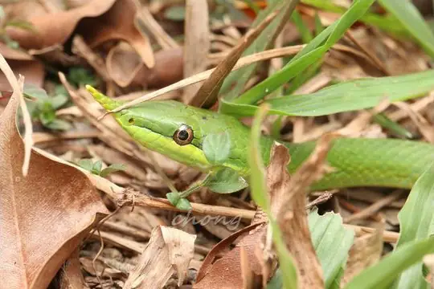
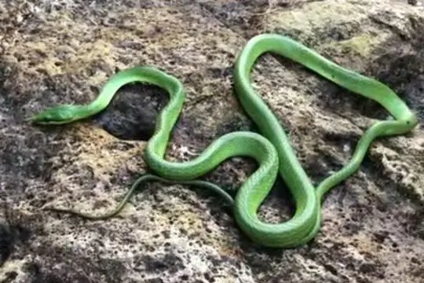

Gonyosoma
The genus Gonyosoma (family Colubridae) has 8 species in SnakeList (none venomous), recorded in 8 countries.
- 8species
- 8non-venomous
- 8countries
Species
Showing 8 species
 Blue-eyed Bush Rat SnakeGonyosoma coeruleum
Blue-eyed Bush Rat SnakeGonyosoma coeruleum Celebes Black-tailed RatsnakeGonyosoma jansenii
Celebes Black-tailed RatsnakeGonyosoma jansenii Green Trinket SnakeGonyosoma prasinum
Green Trinket SnakeGonyosoma prasinum
Hainan Rhinoceros SnakeGonyosoma hainanense Khasi Hills Trinket SnakeGonyosoma frenatum
Khasi Hills Trinket SnakeGonyosoma frenatum Rainbow Tree SnakeGonyosoma margaritatum
Rainbow Tree SnakeGonyosoma margaritatum Red-Tailed RacerGonyosoma oxycephalum
Red-Tailed RacerGonyosoma oxycephalum
Rhino Rat SnakeGonyosoma boulengeri
No snakes in Gonyosoma match.